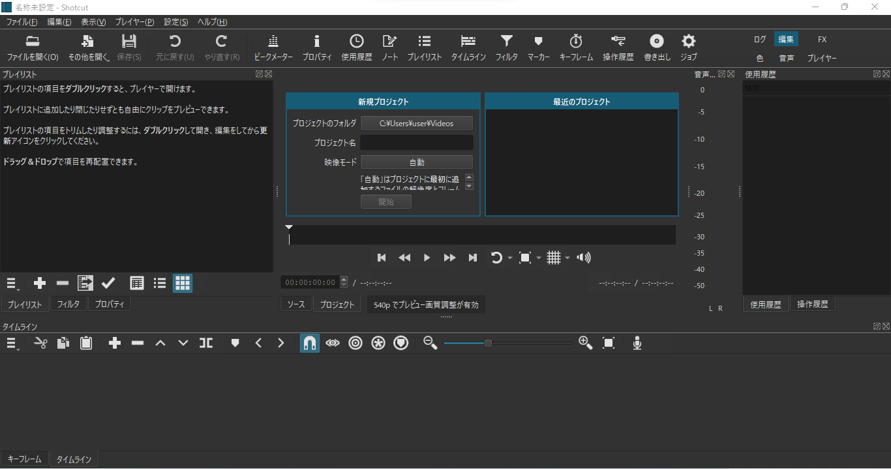
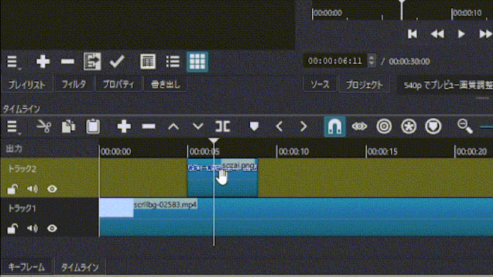
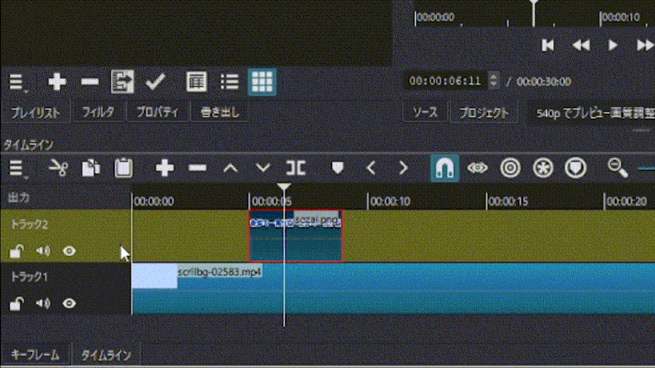
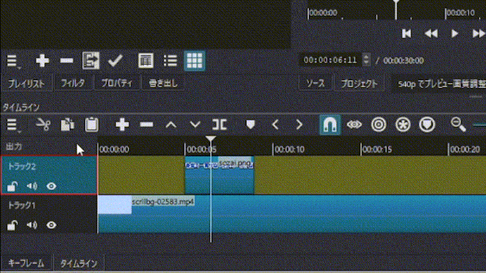
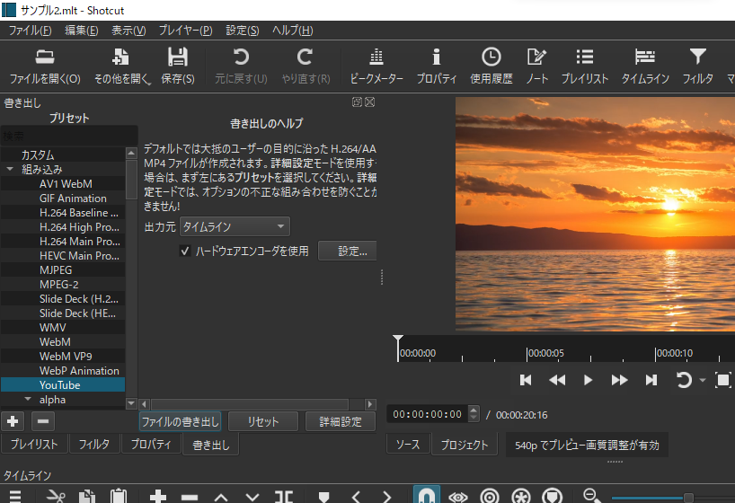

1 基本操作
1.1 レイアウトの選択
Shotcutを起動すると、次のような画面になります。

この画面の構成は、編集レイアウトと呼ばれるものです。Shotcutにはいくつかの画面の構成（レイアウト）があり、やりたい操作をおこなううえで便利なレイアウトに切り替えながら利用することができます。
一方で、多くの利用ケースでは、編集レイアウトを使っておくだけでも十分です。実際、以降の説明でも、基本的にこの編集レイアウトだけを使いながら操作を説明しています。
Shotcutの操作に慣れてきたら、ほかのレイアウトを試してみてもいいかもしれません。
ここでは、Shotcutの「表示」メニューから「使用履歴」「操作履歴」の表示をオフに、「書き出し」「ジョブ」の表示をオンにした状態の編集レイアウトを表示しています。
レイアウトを変更するには、画面右上から「ログ」「編集」「FX」「色」「音声」「プレイヤー」のいずれかを選びます。
1.2 プロジェクトを保存する
Shotcutのような動画編集ソフトでは、まずはじめに、画像ファイルや動画ファイル、音声ファイルといった素材ファイルを取り込み、それら一つ一つの素材について、
- どのタイミングで表示・再生させるか
- どのように表示・再生させるか
を決めていくことによって、一本の動画を仕上げていきます。
このような「素材ファイルと、それらをどのタイミングで・どのように表示・再生させるかという情報の組み合わせ」のことをプロジェクトと呼びます。
Shotcutでは、そうしたプロジェクトの情報を.mltという拡張子のファイルとして保存します。
.mltファイルに保存された情報をもとにして、実際に動画ファイルを保存するには、「書き出し」という別の操作が必要です。
新しく動画（プロジェクト）をつくりはじめるには、Shotcutを起動したときに表示されている「新規プロジェクト」というパネルから、「プロジェクト名」（作成したい.mltファイルの名前）を入力して、「開始」をクリックします。あるいは、画面の上部に表示されている「（保存）」というアイコンから、.mltファイルを保存することもできます。
「設定 > プロジェクト > 映像モード」というメニューから、プロジェクトの映像モードを選択できます。映像モードは、プロジェクトの解像度とfpsの組み合わせです。
fpsというのは1秒間あたりに表示される「コマ数」のことで、たとえば、fpsが25であれば、毎秒25個のフレームを表示することになります。
1.3 プレイリストに素材を取り込む
素材ファイルをプロジェクトに取り込むには、画面左上の「プレイリスト」という領域に、追加したい素材ファイルをドラッグアンドドロップします。
あるいは、画面の上部の「（ファイルを開く）」というアイコンから追加したいファイルを選択すると、素材のプレビューが表示されるので、プレビューをプレイリストにドラッグアンドドロップすることによっても、素材をプレイリストに取り込むことができます。
1.4 タイムラインに素材を並べる
1.4.1 トラックやクリップを追加する
プレイリストは、素材ファイルがパソコンのなかのどこにあるかという情報を.mltファイルに保存して管理するための機能です。
取り込んだ素材を動画のなかで実際に表示・再生させるには、表示・再生させたい素材をプレイリストから選んで、画面の下部の領域に配置していきます。なお、この領域のことは「タイムライン」といいます。
実際にプレイリストに素材を取り込んでから、タイムラインに配置するまでの一連の流れを確認してみましょう。
ここでは、素材ファイルをプレイリストに取り込んでから、タイムラインに配置して、試しにプレビューしています。このとき、素材をタイムラインに配置していくために、動画として実際に表示・再生される「画面」を用意しています。こうした画面のことを「トラック」といいます。
また、トラックに配置された一つ一つの素材のことを「クリップ」と呼びます。クリップはドラッグすることで、表示・再生されるタイミングを調整したり、配置するトラックを変えたりすることができます。
トラックには、動画ファイルや画像ファイルなどを配置して表示・再生させることができる「映像トラック」と、音声ファイルなどを配置して音声としてのみ再生させることができる「音声トラック」の2種類があります。
トラックは、動画をつくるのに必要な数だけ作成することができます。試しに、いま見たプロジェクトに新たに映像トラックを追加して、別のクリップを重ねて表示してみましょう。
ここでは、画像ファイルを新たに素材としてプレイリストに取り込んでいます。それから、先ほどつくった「トラック1」の上に「トラック2」を追加し、取り込んだ素材を「トラック2」にクリップとして配置しています。
動画（プロジェクト）は、このように画面（トラック）の重なりとして表現されます。タイムライン上で重なっているクリップは、それぞれ別々のトラックに配置したものであっても、同じタイミングで表示・再生されます。なお、クリップが何も配置されていない（トラックが空である）部分を表示・再生すると、通常は黒い画面が無音で表示・再生されます。
タイムライン上にマウスカーソルがある状態でShiftキーを押しながらマウスホイールを回すことで、トラックの縦の表示幅を調整することができます。
また、同様にしてCtrlキーを押しながらマウスホイールを回すことで、タイムラインの縮尺を変えることができます。タイムラインの縮尺は、タイムラインの上部にある「」と「」というアイコンから調整することもできます。
1.4.2 再生ヘッドで分割
クリップをクリックすると、そのクリップが選択された状態になります。また、タイムラインの左端をクリックすると、トラックやタイムライン全体を選択することができます。



クリップやトラックが選択されている状態では、選択されているクリップやトラックが赤い枠線で囲まれていることがわかります。こうした選択状態を解除するには、タイムラインを右クリックすると表示されるコンテキストメニューから「選択 > 選択解除」をクリックします。
選択状態とは別に、そのとき操作しているトラックについては、トラック全体が抹茶色になって表示されます。これは、そのトラックにフォーカスが当たっていることを表します。
また、タイムライン上にある白い縦線は、動画（プロジェクト）をプレビューしたとき、その位置から再生されることを表す目印です。この縦線のことを「再生ヘッド」（または「プレイヘッド」）と呼びます。再生ヘッドの位置を変えるには、トラックの上にある、動画の再生時間が表示されている領域の適当な位置をクリックします。
タイムラインの上部にある「」というアイコンをクリックすると、再生ヘッドの位置でクリップを2つに分割することができます。通常は、そのときフォーカスが当たっているトラックにあるクリップが分割されます。
このあたりの挙動はやや複雑なので、クリップを分割するときには、分割したいクリップがあるトラックにフォーカスが当たっていることを確認するようにしましょう。
タイムラインの操作には、キーボードショートカットを使うと便利です。
たとえば、キーボードのAltキーとカーソルキー（←または→）を同時に押すことで、再生ヘッドをそこからもっとも近いクリップの端に移動させることができます。
また、クリップの分割などの操作については、「元に戻す」や「やり直す」を適用することができます。「元に戻す」にはCtrlキーとzキーを同時押し、「やり直す」にはCtrlキーとyキーを同時押しします。
1.4.3 抜き取り・リップル削除
トラックに配置されているクリップを取り除くには、2種類の方法があります。
ひとつめは「抜き取り」という方法です。クリップを抜き取るには、抜き取りたいクリップが選択された状態で、タイムラインの上部にある「」というアイコンをクリックします。
実際にクリップの抜き取りをしているようすを確認してみましょう。
ここでは、試しにプレビューをした後で、「トラック2」にある抜き取りたいクリップを選択し、抜き取りをしています。クリップの抜き取りをした場合、抜き取られたクリップがあった場所は空になります。
クリップを取り除く2つめの方法が「リップル削除」です。クリップをリップル削除するには、削除したいクリップが選択された状態で、タイムラインの上部にある「」というアイコンをクリックします。
クリップをリップル削除しているようすを見てみましょう。
ここでは、先ほどと同じように一度プレビューをした後で、「トラック2」にある削除したいクリップを選択し、リップル削除しています。リップル削除では、抜き取りしたときと同様に選択したクリップが取り除かれますが、取り除かれたクリップよりも後ろにあるクリップの扱いが抜き取りしたときと異なっています。リップル削除をした場合、取り除かれたクリップに後続するクリップは、元の間隔を保ったまま「前にずらされる」ような挙動になります。
このように、クリップに対して操作をおこなったとき、後続するクリップがそのまままとめて「（前や後ろに）ずらされる」挙動のことを「リップル」といいます。
リップル（ripple）というのは、さざなみや波紋が伝わるさまを意味する英単語です。クリップ同士が間隔を保ったまま「ずらされる」ようすが波紋が伝わるようすに似ていることから、このような表現がされているのでしょう。
1.4.4 切り取り・コピー
Shotcutには、操作しているクリップを一時的に保存しておける「クリップボード」機能があります。選択したクリップを取り除いてしまうのではなく、クリップボードに保存するには、抜き取り・リップル削除ではなく、切り取り・コピーを使います。
クリップを「切り取り」するには、切り取りたいクリップが選択された状態で、タイムラインの上部にある「」というアイコンをクリックします。切り取りをした場合、リップル削除したときと同じように、後続するクリップは間隔を保ったまま「前にずらされる」ような挙動をします。
また、クリップを「コピー」するには、コピーしたいクリップが選択された状態で、タイムラインの上部にある「」というアイコンをクリックします。
1.4.5 上書き・貼り付け
切り取りやコピーによってクリップボードに保存されているクリップをトラックに差し戻すには、「上書き」や「貼り付け」を使います。
「上書き」するには、上書きしたいトラックにフォーカスが当たっている状態で、タイムラインの上部にある「」というアイコンをクリックします。
実際に「上書き」をしているようすを見てみましょう。
「上書き」を使うと、そのときクリップボードにあるクリップによって、再生ヘッドがある位置からそのトラックが上書きされます。再生ヘッドがある位置の後ろに別の要素があった場合、上書きするクリップと同じ長さだけ、その部分にあった要素が消えてしまうような挙動になります。
また、「貼り付け」をするには、貼り付けをしたいトラックにフォーカスが当たっている状態で、タイムラインの上部にある「」というアイコンをクリックします。
「貼り付け」をしているようすを確認してみましょう。
「貼り付け」を使うと、そのときクリップボードにあるクリップが再生ヘッドのある位置に挿入されます。再生ヘッドがある位置の後ろに別の要素があった場合、後続する要素は「後ろにずらされる」ような挙動をします。
リップルは、Shotcutでの操作に慣れるまでは、どんな挙動になるか予測しづらいものかもしれません。しかし、複数のトラックを使った動画（プロジェクト）を編集していると、トラック間でタイミングを同期したままクリップを操作したいシーンがよくあり、そうした場合には、リップルを活用できると非常に便利です。
リップルは、タイムラインの上部にあるスイッチから切り替えることで、挙動を調整することができます。
タイムラインの上部にある「（リップル）」を有効にしていると、クリップの位置や長さを調整したときにも、後続するクリップがリップルするようになります。また、「（すべてのトラックをリップル）」を有効にしていると、あるトラックでのリップルがすべてのトラックで同期するようになります。
このほかに、マーカーがリップルに追従するようになる「（マーカーをリップル）」という機能もあります。
1.5 動画として書き出しする
.mltファイルを元に動画ファイルを作成するには「書き出し」をおこなう必要があります。
プロジェクトを動画ファイルとして書き出すには、まず、画面の上部に表示されている「（書き出し）」というアイコンをクリックします。すると、画面の左上に「書き出し」というパネルが開くので、適当な「プリセット」を選択し、「ファイルの書き出し」ボタンをクリックします。

利用しているパソコンの性能にもよりますが、動画ファイルの書き出しには相応の時間がかかります。
Shotcutは、同梱されているffmpegというソフトウェアを使って、動画ファイルの書き出しをおこないます。なお、とくに何も指定しない場合、動画の書き出しにはCPUのみが使われます。動画の書き出しにGPUなどを利用したい場合、「書き出し」パネルの「ハードウェアエンコーダを使用」というチェックボックスにチェックを入れます。利用可能なハードウェアエンコーダは、Shotcutによって自動的に検出されます。